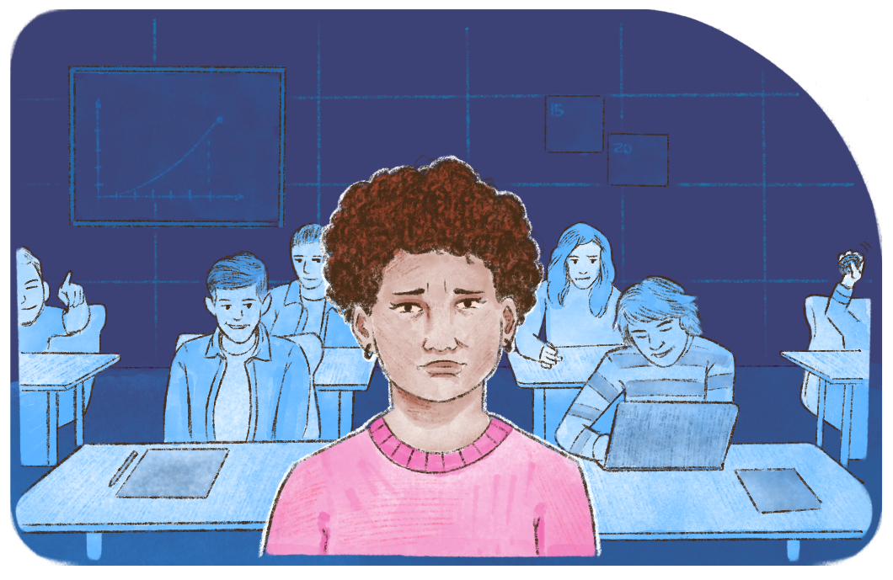

Não basta o acesso: é preciso pertencer e permanecer
As Ações Afirmativas constituem medidas concretas para viabilizar o direito à igualdade sem anular as diferenças e a diversidade que são inerentes à condição humana. Como políticas compensatórias, elas asseguram a pluralidade sociocultural, essencial para fortalecimento da sociedade democrática e justa que tanto desejamos. Mas, ainda que as Ações Afirmativas assegurem a entrada nas instituições, é fundamental que sujeitos da diversidade possam permanecer. Somente assim os direitos são efetivados.
Considerando que a escola é uma instituição cujo processo de construção também foi marcado pela influência do racismo, do patriarcalismo e da divisão de classes, por vezes, ela reproduz em seu projeto formativo valores e práticas que excluem de determinados postos de trabalho, de profissões e de espaços de liderança os sujeitos da diversidade. Você já parou para observar qual a predominância nos cursos profissionais por gênero, raça e classe? Lidamos com isso muitas vezes de forma “naturalizada”, sem questionar situações que, aparentemente, podem ser simples ou comuns, mas que revelam como a lógica de exclusão é reproduzida.
Chegando ao último ano de uma turma do curso Técnico em Edificações, o burburinho e os queixumes sobre estágio não cessam, e logo são providenciadas reuniões entre coordenadores de curso e coordenações de estágio. Naquele ano, porém, um problema se tornaria agudo: pela primeira vez, a turma concluinte do curso tinha mais mulheres do que homens, e o debate era sobre como adequar as vagas de estágio, já que estas foram apresentadas como vagas para perfis predominantemente masculinos.
Tal situação, entre tantas outras possíveis, requer uma ação de gestão que intervenha nessa lógica. No caso apresentado, de que maneira a política de estágio e de formação de parcerias com setores públicos, empresas e outras entidades são feitas? Tem-se levado em conta a presença de práticas de caráter sexista, racista, capacitista e/ou homofóbico por parte dessas entidades, por exemplo? Ou, ainda, já se observou quais oportunidades de estágio são destinadas a estudantes negros? Nem sempre esses critérios são explícitos, mas existem, e a lógica da exclusão também se revela aí. Quando uma instituição aceita critérios em um estágio que reproduzem processos discriminatórios, ela fragiliza as políticas afirmativas.
Em diversas questões da formação para o mundo do trabalho, a EPT certamente tem muito a contribuir. Fazer o enfretamento de pautas como a mencionada acima é uma possibilidade concreta não apenas de questionar outras instituições, mas também de rediscutir as formas como as diferenças e as discriminações no trabalho – entre homens e mulheres, entre negros e brancos, entre pessoas com deficiência e sem deficiência – são espelhadas internamente na instituição quando docentes separam grupos por tarefas e levam em conta esses marcadores. Atendo-nos ao exemplo apresentado, de que vale questionar o perfil de vagas de estágio se, durante o curso, docentes separam tarefas de liderança em vistas técnicas para meninos, ou entende que algumas tarefas são perigosas demais para meninas pelo simples fato de serem meninas?
A EPT, pautada no trabalho como princípio educativo, tem em seus objetivos a oferta de uma educação que faça da concretude da vida tempo e espaço formativos. Por isso, é fundamental que as experiências de formação pelo trabalho possam produzir experiências potentes de ressignificação das pessoas como sujeitos sociais. Se dentro de uma experiência educacional naturalizamos as opressões de gênero, por exemplo, não é possível fazer com que situações de assédio sexual e moral sejam extintas no mundo do trabalho ou no mundo corporativo.
Essa pauta atravessa todo o percurso formativo, sobretudo em uma perspectiva de educação integrada. Assim, no campo de outras disciplinas, quantos exemplos podemos mencionar de práticas que, mascaradas de valorização de habilidades de alguns estudantes, incute ideias racistas ou capacitistas? Já pensou como docentes da área de Educação Física, ao promoverem práticas esportivas escolar que supervalorizam a “alta performance”, podem excluir aqueles que não têm aptidão ou que possuem alguma deficiência que impeça a participação nos mesmos moldes? Essa ação não revela que alguns são excepcionais, enquanto outros acumulam déficits?
As interações entre gênero, raça e condições físicas e intelectuais no cotidiano educacional podem provocar práticas de violência física e simbólica. Por isso, pautas como essas precisam ter espaço privilegiado de escuta atenta no ambiente escolar, que pode ser por meio de projetos e programas e, acima de tudo, pelo preparo de docentes, de técnicos e de servidores em geral (terceirizados ou não) que estão ali para que, no momento em que situações de violências ocorrerem, possam acolher aqueles que sofrem agressões e fazê-los sentir que terão espaço no ambiente escolar para expor suas vozes e seus modos de existência.
.png)
Título: III Marcha Antirrascista na Unicamp
Fonte: Kennedy (2017).
Elaboração: Prosa (2025c).
A escola é um ambiente privilegiado para a aprendizagem de relações sociais, portanto, determinante para pensarmos o modo como as pessoas vão apropriar-se do mundo pelo trabalho. Cabe à gestão, por meio de seu projeto pedagógico, decidir quais relações terão ecos e como serão aproveitadas pedagogicamente para construir um modo outro de pensar e de fazer educação. Isso significa que, de acordo com Fernando Seffner (2020, p. 81), “inverter o sinal, e construir uma escola que se ocupe com o conhecimento, a valorização e o respeito pela diversidade cultural é algo novo, e tem impactos na densidade democrática de qualquer país”.
Claro que tratar de temas da diversidade possivelmente propulsione a eclosão de tensões que, inclusive, podem atravessar os modos de ver e vivenciar essas questões pela comunidade docente. Mas não resolveremos nada disso fazendo acordo com o silenciamento.
Torna-se fundamental instituir locais e tempos de formação nos quais docentes possam expressar seus medos, fazer enfrentamentos de seus preconceitos e criar estratégias para construir um currículo multicultural. Construir ambientes onde não haja constrangimento em discutir as origens e as estruturas que formam nossos preconceitos é o melhor caminho para enfrentar o silêncio imposto pela lógica pautada na exclusão de determinados grupos. E somente assim a comunidade docente poderá, também, compreender a importância de vencer o silenciamento das opressões nas salas e nos corredores das instituições.
Precisamos considerar que as experiências formativas na escola causam impacto nas subjetividades dos sujeitos. A maneira como cada estudante vai reconhecendo seu lugar de pertencimento na escola também exercerá impacto no modo como reconhecerá seu papel e seu espaço nas relações de trabalho e na sociabilidade. Assim, em um espaço escolar no qual o silenciamento de opressões é colocado como acordo tácito, muitos estudantes podem não encontrar acolhimento para expressar as opressões vividas.

Título: O silenciamento de opressões em sala de aula
Fonte: Prosa (2025d).
Os sujeitos da diversidade precisam pertencer, sentir que aquela escola foi feita para eles, e que a gestão escolar volta a atenção e os esforços para suas demandas. Nem tudo poderá ser alterado de uma hora para outra, pois as instituições precisam adaptar e/ou criar rampas, salas, refeitórios, banheiros, recursos multifuncionais etc., além de reorganizar aspectos curriculares e formativos. Então, um projeto que tem como objetivo central acolher as diferenças exige tempo, mas é fundamental que a comunidade seja convidada e engajada a construir essa proposta coletivamente.
Destinar atenção às políticas de permanência é fundamental. Portanto, a aquisição e a qualidade da refeição escolar, do acesso a computadores com internet, à reprografia, a uniformes e outras necessidades são essenciais para a consolidação de direitos. Cabe à gestão compreender que não se tratam de processos administrativos, financeiros e burocráticos, apenas. Estes processos são estruturantes para permanência dos sujeitos da diversidade.
Para refletir: escuta da diferença no espaço escolar
Chegamos ao segundo momento de reflexão deste capítulo!
Você já pensou em alguma iniciativa de escuta dos sujeitos da diversidade? Já refletiu sobre como transformar essas escutas em uma vantagem pedagógica? Pense na possibilidade de elaborar um projeto ou uma ação que colha histórias e depoimentos de estudantes, anônimas ou não. Avalie dentro da legislação o que cabe fazer, mas pense quais alternativas pedagógicas poderiam ser criadas para tratar desses temas e violências sofridas junto à comunidade.
Lembre-se de registrar suas impressões em seu Memorial e/ou seguir as orientações de seu tutor.